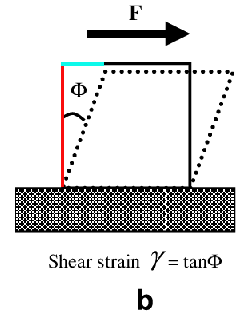
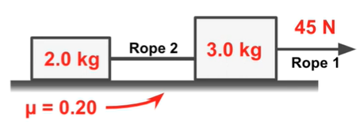

Believe it or not, solid objects can also feel pressure. We call this 'stress', it is calculated in the same way as pressure.$$σ=\frac{F}{A}$$
| Name | Unit | Symbol |
|---|---|---|
| Stress (σ) | Pascal | Pa |
If we're not talking about mental stress, there are 4 main types we can discuss. I will also explain each type with the same example.
Tension will be discussed in this course as well, but tension stress is basically when you stretch or pull an object by its ends. Let's say we have a soft cube to play with. Tension stress would be pulling on two sides of the cube to stretch it out and maybe rip it apart.
Compression stress is when you push or compress an object by its ends. Let's say we have a soft cube to play with. Compression stress would be squeezing this soft cube.
Shear stress is the most difficult type to comprehend. It is basically when you apply a force parallel to the cross-sectional area of an object. Let's say we have a soft cube to play with. Shear stress would be taking your fist and pushing into a side of the cube as hard as you can, this deforms the cube and causes its layers to slide relative to eachother.
Bending stress is another logical type of stress. It is when you apply a force perpendicular to the surface of an object, causing it to bend or deform. The outside of the bend will be stretched, while the inside of the bend is compressed. The stress will be the greatest at the outermost part of the object. A great example of this is folding paper, because the outer edges are being stretched, while the paper at the bend is being compressed. The most stress is applied to the edges of your paper.
Tension, by definition, is a force from an object under stress that is trying to restore equilibrium. If you are pulling on a rubber band, the rubber band will be under stress and a tension force will be applied to it. As soon as you stop applying force, the tension force will take over and force the rubber band back to its original non-deformed state.
Calculating this tension force is difficult, because it gets more complex as objects get more complex. In the case of a single string which has no bends, the tension force will be equal to the combined forces acting on the ends of the string, following Newton's third law. In a regular scenario this could be the sum of your pulling force and the force of gravity.
Strain is a measure of deformation an object experiences when it is under stress or tension. We can calculate the strain in different ways. For one-dimensional stretching or compressing, referred to as linear strain, we can calculate strain using this formula:$$ε=\frac{\Delta x}{x_{0}}$$So we divide the added or removed (if there is compression stress) length by the initial length of the object.
For three-dimensional stretching or compressing, referred to as volumetric strain, we can do the same with volume, getting this formula:$$ε=\frac{\Delta V}{V_{0}}$$Both of these can also be expressed as percentages by multiplying by 100. This is not a unit, since dividing meter by meter gives us no unit.
Elasticity is the ability for an object to return to its non-deformed, initial shape after being under stress. We can calculate the stress applied to an object with this new formula:$$σ=Eε$$Here, σ stands for the stress, ε is strain, and E is the modulus of elasticity, also known as Young's modulus. The value of Young's modulus depends on the material of your object, but it is always measured in Pascal (or N/m²).
| Name | Symbol | Value |
|---|---|---|
| Young's Modulus | E | Material-specific (Pa) |
The bulk modulus tells us about the relation between pressure acting on an object and its change in volume due to compression (the volumetric strain). Since compression causes a decrease in volume, we get this formula to calculate the bulk modulus of an object:$$K=-\frac{p}{ε}$$where K is bulk modulus, p is pressure, and ε is volumetric strain. This also allows us to calculate the volumetric strain on an object if we know its bulk modulus, the initial volume, and how much pressure is applied, like so:$$\Delta V=-\frac{Vp}{K}$$
| Name | Symbol | Value |
|---|---|---|
| Bulk Modulus | K | Material-specific (Pa) |
How do we calculate shear strain? It's not as straightforward as the other types of strain, like volumetric strain. I'll explain this using the following diagram.
 From QuoraShear strain will be displayed with the symbol γ. It is equal to the displacement or deformation of the object due to shear tension (Δx) divided by the height of the object (h). In this case the blue part is the deformation, and the red part is the height.$$γ=\frac{Δx}{h}$$Another way to approach this, like on the diagram, is by saying that γ is the tangent of the angle formed by that deformation.
Shear strain, like all types of strain, has no unit, since we are dividing two of the same units.
With that we can define a relation between the deformation (the shear strain) and shear stress. This is like using the bulk modulus, because we will be using the shear modulus for this.$$G=\frac{τ}{γ}$$Where G is the shear modulus, τ is shear stress, and γ is the shear strain.
| Name | Unit | Symbol |
|---|---|---|
| Shear Stress (τ) | Pascal | Pa |
| Name | Symbol | Value |
|---|---|---|
| Shear Modulus | G | Material-specific (Pa) |
If we know an object's height, shear modulus, and shear stress (the pressure on it), we can calculate the deformation in meters like so:$$\Delta x=\frac{hτ}{G}$$where Δx is the deformation, h is the height of the object, G is the shear modulus, and τ is the shear stress or the pressure acting on the object.
I probably should have covered friction before, but it is the force an object experiences in the opposite direction of its motion when sliding along a surface. You already learned about normal force, which is created when an object is placed on a surface, causing the force of gravity to act on the object and thus on the surface, to which the surface responds with an equal opposite force called normal force by Newton's third law of motion. This comes with some friction in the opposite direction of the object's (impending) motion. The higher this motion's force, the higher the friction, they are proportional, and the constant of proportionality μ (dependant on the surface's material) gives us a new formula:$$F_{friction}=\mu N$$
| Name | Symbol | Value |
|---|---|---|
| Friction Coefficient | μ | Material-specific (No unit) |
Let's combine a bunch of our knowledge to solve one exercise.
 From YouTubeIn this situation, two objects are connected via a rope, and the first object also has a rope to be pulled by. A tension force of 45N is applied to the first object, accelerating them both across a surface. We must determine the acceleration of this situation, as well as the tension force in the second rope.
Let's begin by calculating the acceleration of the entire thing. If we add everything together, the mass is 5.0 kg. We can then calculate the force of gravity acting on the entire thing.$$F=5.0kg*9.81\frac{N}{kg}=49.05N$$This means our normal force is also equal to 49.05N. There is friction, which we can calculate like so:$$F_{friction}=49.05N*0.20=9.81N$$We want to calculate acceleration, so we need the total forward force, which is the tension force minus the friction force.$$F=45N-9.81N=35.19N$$Now we use F=ma to calculate acceleration:$$a=\frac{F}{m}=\frac{35.19N}{5.0kg}=7.038\frac{m}{s^{2}}$$And we have the solution for the first part of the exercise.
The second part wants us to calculate the tension force on rope 2. Remember that the tension force on rope 1 is that 45N, the same as the force on object 1. We must thus calculate the tension force on object 2.
The force of gravity is as follows:$$F=2.0kg*9.81\frac{N}{kg}=19.62N$$This is the same as the normal force, so we calculate friction:$$F_{friction}=19.62N*0.2=3.924N$$We already know this has an acceleration of 7.038 m/s², so we can calculate the total force on object 2 next:$$F=2.0kg*7.038\frac{m}{s^{2}}=14.076N$$Okay, so we know this 14.076N is the result of the tension force minus the friction force, which we already know. This means we can get our tension force!$$14.076N=F_{tension}-3.924N$$Switch some values around, and you'll find that the tension force is equal to a beautiful 18N exactly. We've solvd the exercise!